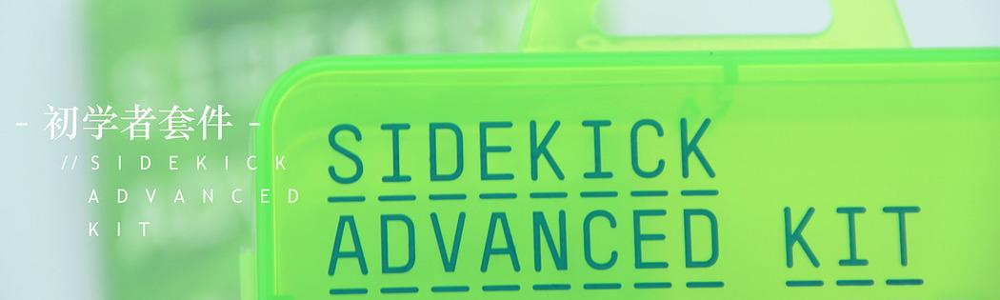
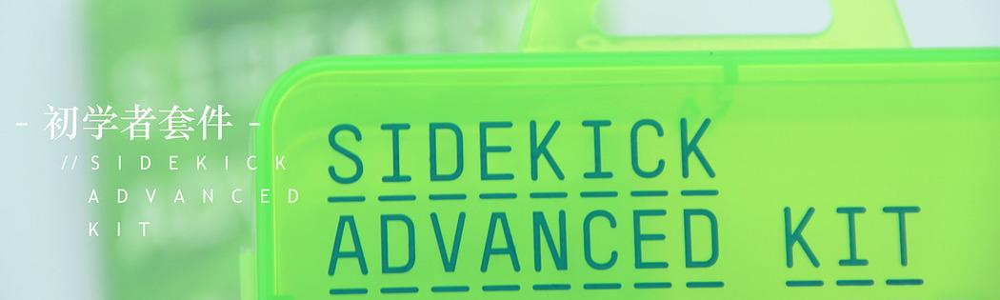

Welcome to the world of electronic creation! Sidekick Advanced Kit is an Arduino electronics kit that can lead you to world of electronic. It contains the most common electronic components such as resistors, Leds etc. Also contains a large number of rich expansion functional modules, such as temperature and humity sensors, 16x2 LCD display, servo, stepper and so on. This tutorial content of the discussion from the official Arduino tutorials with Seeed resource. This kit contains 39 examples, which can help to start your Arduino development quickly.